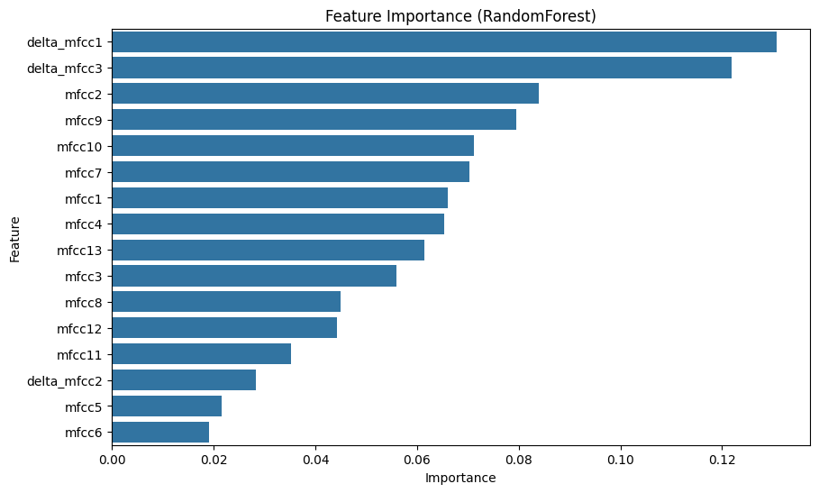
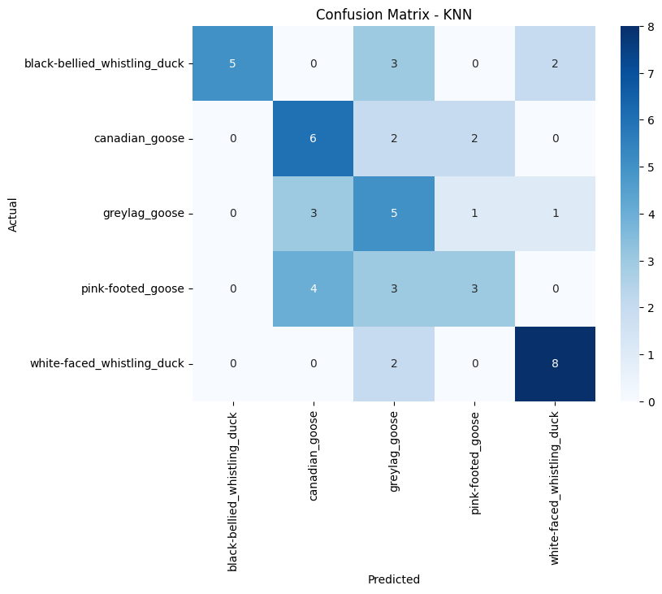
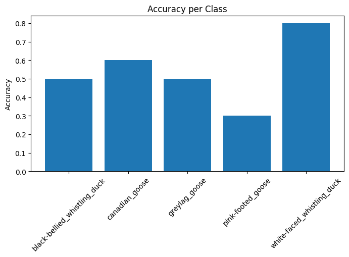
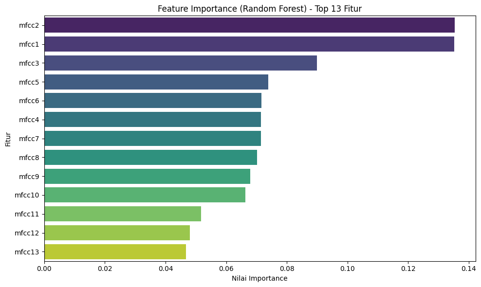

1. Import Library#
import numpy as np
import pandas as pd
from sklearn.ensemble import RandomForestClassifier
from xgboost import XGBClassifier
from sklearn.neighbors import KNeighborsClassifier
from sklearn.metrics import classification_report, confusion_matrix, accuracy_score
from sklearn.model_selection import GridSearchCV, StratifiedKFold
from sklearn.preprocessing import LabelEncoder
import matplotlib.pyplot as plt
import seaborn as sns
import joblib
import os
2. Load Dataset#
import os
import numpy as np
import joblib
data_path = "data/processed"
models_path = "models"
os.makedirs(models_path, exist_ok=True)
X_train_scaled = np.load(os.path.join(data_path, "X_train_final_scaled.npy"))
y_train_final = np.load(os.path.join(data_path, "y_train_final.npy"))
X_test_scaled = np.load(os.path.join(data_path, "X_test_scaled.npy"))
y_test = np.load(os.path.join(data_path, "y_test.npy"))
# Split Train → Validation
from sklearn.model_selection import train_test_split
X_tr, X_val, y_tr, y_val = train_test_split(
X_train_scaled, y_train_final,
test_size=0.2, stratify=y_train_final, random_state=42
)
# Label Encoding
from sklearn.preprocessing import LabelEncoder
le = LabelEncoder()
y_train_num = le.fit_transform(y_tr)
y_val_num = le.transform(y_val)
y_test_num = le.transform(y_test)
# Simpan LabelEncoder
label_encoder_file = os.path.join(models_path, "label_encoder.pkl")
joblib.dump(le, label_encoder_file)
print("Mapping kelas numerik:")
for i, cls in enumerate(le.classes_):
print(f"{i} -> {cls}")
Mapping kelas numerik:
0 -> black-bellied_whistling_duck
1 -> canadian_goose
2 -> greylag_goose
3 -> pink-footed_goose
4 -> white-faced_whistling_duck
Feature Selection#
# Feature names (dari hasil ekstraksi audio)
feature_names = [
"mfcc1","mfcc2","mfcc3","mfcc4","mfcc5","mfcc6","mfcc7",
"mfcc8","mfcc9","mfcc10","mfcc11","mfcc12","mfcc13",
"delta_mfcc1","delta_mfcc2","delta_mfcc3","delta_mfcc4","delta_mfcc5",
"zcr","rms","centroid","spectral_rolloff","spectral_bandwidth"
]
from sklearn.ensemble import RandomForestClassifier
import matplotlib.pyplot as plt
import seaborn as sns
rf_selector = RandomForestClassifier(n_estimators=500, random_state=42)
rf_selector.fit(X_tr, y_train_num)
importances = rf_selector.feature_importances_
feat_imp_df = pd.DataFrame({"Feature": feature_names[:X_tr.shape[1]], "Importance": importances})
feat_imp_df = feat_imp_df.sort_values("Importance", ascending=False)
plt.figure(figsize=(10,6))
sns.barplot(x="Importance", y="Feature", data=feat_imp_df)
plt.title("Feature Importance (RandomForest)")
plt.show()
# Ambil top 13 fitur
selected_features = feat_imp_df.head(13)["Feature"].tolist()
selected_idx = [feature_names.index(f) for f in selected_features]
X_tr_sel = X_tr[:, selected_idx]
X_val_sel = X_val[:, selected_idx]
X_test_sel = X_test_scaled[:, selected_idx]
print(f"Fitur yang dipilih ({len(selected_features)}): {selected_features}")

Fitur yang dipilih (13): ['delta_mfcc1', 'delta_mfcc3', 'mfcc2', 'mfcc9', 'mfcc10', 'mfcc7', 'mfcc1', 'mfcc4', 'mfcc13', 'mfcc3', 'mfcc8', 'mfcc12', 'mfcc11']
4. Training Models#
from sklearn.model_selection import StratifiedKFold, GridSearchCV
from sklearn.ensemble import VotingClassifier
from sklearn.neighbors import KNeighborsClassifier
from xgboost import XGBClassifier
from sklearn.preprocessing import StandardScaler
from sklearn.pipeline import make_pipeline
skf = StratifiedKFold(n_splits=5, shuffle=True, random_state=42)
# --- Random Forest ---
rf_params = {'n_estimators':[500], 'max_depth':[20], 'min_samples_split':[2,3]}
rf_grid = GridSearchCV(RandomForestClassifier(random_state=42), rf_params, cv=skf, scoring='f1_macro')
rf_grid.fit(X_tr_sel, y_train_num)
rf_best = rf_grid.best_estimator_
# --- XGBoost ---
xgb_params = {'n_estimators':[500], 'max_depth':[7], 'learning_rate':[0.05], 'subsample':[0.9], 'colsample_bytree':[0.9]}
xgb_grid = GridSearchCV(XGBClassifier(random_state=42, eval_metric='mlogloss'), xgb_params, cv=skf, scoring='f1_macro')
xgb_grid.fit(X_tr_sel, y_train_num)
xgb_best = xgb_grid.best_estimator_
# --- KNN ---
scaler_knn = StandardScaler()
X_tr_knn = scaler_knn.fit_transform(X_tr_sel)
X_val_knn = scaler_knn.transform(X_val_sel)
X_test_knn = scaler_knn.transform(X_test_sel)
knn_params = {'n_neighbors':[5], 'weights':['distance'], 'p':[2]}
knn_grid = GridSearchCV(KNeighborsClassifier(), knn_params, cv=skf, scoring='f1_macro')
knn_grid.fit(X_tr_knn, y_train_num)
knn_best = knn_grid.best_estimator_
# --- Ensemble Soft Voting ---
ensemble = VotingClassifier(
estimators=[('rf', rf_best), ('xgb', xgb_best), ('knn', knn_best)],
voting='soft'
)
ensemble_pipeline = make_pipeline(StandardScaler(), ensemble)
ensemble_pipeline.fit(X_tr_sel, y_train_num)
Pipeline(steps=[('standardscaler', StandardScaler()),
('votingclassifier',
VotingClassifier(estimators=[('rf',
RandomForestClassifier(max_depth=20,
n_estimators=500,
random_state=42)),
('xgb',
XGBClassifier(base_score=None,
booster=None,
callbacks=None,
colsample_bylevel=None,
colsample_bynode=None,
colsample_bytree=0.9,
device=None,
early_stopping_rounds=None,
en...
interaction_constraints=None,
learning_rate=0.05,
max_bin=None,
max_cat_threshold=None,
max_cat_to_onehot=None,
max_delta_step=None,
max_depth=7,
max_leaves=None,
min_child_weight=None,
missing=nan,
monotone_constraints=None,
multi_strategy=None,
n_estimators=500,
n_jobs=None,
num_parallel_tree=None, ...)),
('knn',
KNeighborsClassifier(weights='distance'))],
voting='soft'))])In a Jupyter environment, please rerun this cell to show the HTML representation or trust the notebook. On GitHub, the HTML representation is unable to render, please try loading this page with nbviewer.org.
Parameters
| steps | [('standardscaler', ...), ('votingclassifier', ...)] | |
| transform_input | None | |
| memory | None | |
| verbose | False |
Parameters
| copy | True | |
| with_mean | True | |
| with_std | True |
Parameters
| estimators | [('rf', ...), ('xgb', ...), ...] | |
| voting | 'soft' | |
| weights | None | |
| n_jobs | None | |
| flatten_transform | True | |
| verbose | False |
Parameters
| n_estimators | 500 | |
| criterion | 'gini' | |
| max_depth | 20 | |
| min_samples_split | 2 | |
| min_samples_leaf | 1 | |
| min_weight_fraction_leaf | 0.0 | |
| max_features | 'sqrt' | |
| max_leaf_nodes | None | |
| min_impurity_decrease | 0.0 | |
| bootstrap | True | |
| oob_score | False | |
| n_jobs | None | |
| random_state | 42 | |
| verbose | 0 | |
| warm_start | False | |
| class_weight | None | |
| ccp_alpha | 0.0 | |
| max_samples | None | |
| monotonic_cst | None |
Parameters
| objective | 'multi:softprob' | |
| base_score | None | |
| booster | None | |
| callbacks | None | |
| colsample_bylevel | None | |
| colsample_bynode | None | |
| colsample_bytree | 0.9 | |
| device | None | |
| early_stopping_rounds | None | |
| enable_categorical | False | |
| eval_metric | 'mlogloss' | |
| feature_types | None | |
| feature_weights | None | |
| gamma | None | |
| grow_policy | None | |
| importance_type | None | |
| interaction_constraints | None | |
| learning_rate | 0.05 | |
| max_bin | None | |
| max_cat_threshold | None | |
| max_cat_to_onehot | None | |
| max_delta_step | None | |
| max_depth | 7 | |
| max_leaves | None | |
| min_child_weight | None | |
| missing | nan | |
| monotone_constraints | None | |
| multi_strategy | None | |
| n_estimators | 500 | |
| n_jobs | None | |
| num_parallel_tree | None | |
| random_state | 42 | |
| reg_alpha | None | |
| reg_lambda | None | |
| sampling_method | None | |
| scale_pos_weight | None | |
| subsample | 0.9 | |
| tree_method | None | |
| validate_parameters | None | |
| verbosity | None |
Parameters
| n_neighbors | 5 | |
| weights | 'distance' | |
| algorithm | 'auto' | |
| leaf_size | 30 | |
| p | 2 | |
| metric | 'minkowski' | |
| metric_params | None | |
| n_jobs | None |
5. Evaluasi pada Validation Set#
from sklearn.metrics import f1_score
y_val_pred_rf = rf_best.predict(X_val_sel)
y_val_pred_xgb = xgb_best.predict(X_val_sel)
y_val_pred_knn = knn_best.predict(X_val_knn)
y_val_pred_ens = ensemble_pipeline.predict(X_val_sel)
val_scores = {
'RandomForest': f1_score(y_val_num, y_val_pred_rf, average='macro'),
'XGBoost': f1_score(y_val_num, y_val_pred_xgb, average='macro'),
'KNN': f1_score(y_val_num, y_val_pred_knn, average='macro'),
'Ensemble': f1_score(y_val_num, y_val_pred_ens, average='macro')
}
best_name = max(val_scores, key=val_scores.get)
best_model = {
'RandomForest': rf_best,
'XGBoost': xgb_best,
'KNN': knn_best,
'Ensemble': ensemble_pipeline
}[best_name]
print(f"Best model berdasarkan F1-score validation: {best_name}")
import joblib
# Simpan model terbaik ke file
best_model_file = f"models/{best_name.lower()}_best_model.pkl"
joblib.dump(best_model, best_model_file)
Best model berdasarkan F1-score validation: KNN
['models/knn_best_model.pkl']
6. Evaluasi pada Test Set#
from sklearn.metrics import accuracy_score, classification_report, confusion_matrix
X_test_final = X_test_knn if best_name=='KNN' else X_test_sel
y_test_pred = best_model.predict(X_test_final)
acc_test = accuracy_score(y_test_num, y_test_pred)
f1_test = f1_score(y_test_num, y_test_pred, average='macro')
print(f"Test Accuracy: {acc_test:.4f}")
print(f"Test F1-score (macro): {f1_test:.4f}")
print("\nClassification Report:")
print(classification_report(y_test_num, y_test_pred, target_names=le.classes_))
# Confusion Matrix
import matplotlib.pyplot as plt
import seaborn as sns
cm = confusion_matrix(y_test_num, y_test_pred)
plt.figure(figsize=(8,6))
sns.heatmap(cm, annot=True, fmt='d', cmap='Blues', xticklabels=le.classes_, yticklabels=le.classes_)
plt.xlabel("Predicted")
plt.ylabel("Actual")
plt.title(f"Confusion Matrix - {best_name}")
plt.show()
# Accuracy per class
class_acc = {cls: accuracy_score(y_test_num[y_test_num==i], y_test_pred[y_test_num==i])
for i, cls in enumerate(le.classes_)}
plt.figure(figsize=(8,4))
plt.bar(class_acc.keys(), class_acc.values())
plt.xticks(rotation=45)
plt.ylabel("Accuracy")
plt.title("Accuracy per Class")
plt.show()
print("\nAccuracy per class:")
for cls, acc_cls in class_acc.items():
print(f"{cls}: {acc_cls:.2f}")
success = (acc_test >= 0.85) and (f1_test >= 0.80)
print(f"\nApakah model berhasil (Success)? {'YES' if success else 'NO'}")
Test Accuracy: 0.5400
Test F1-score (macro): 0.5451
Classification Report:
precision recall f1-score support
black-bellied_whistling_duck 1.00 0.50 0.67 10
canadian_goose 0.46 0.60 0.52 10
greylag_goose 0.33 0.50 0.40 10
pink-footed_goose 0.50 0.30 0.38 10
white-faced_whistling_duck 0.73 0.80 0.76 10
accuracy 0.54 50
macro avg 0.60 0.54 0.55 50
weighted avg 0.60 0.54 0.55 50


Accuracy per class:
black-bellied_whistling_duck: 0.50
canadian_goose: 0.60
greylag_goose: 0.50
pink-footed_goose: 0.30
white-faced_whistling_duck: 0.80
Apakah model berhasil (Success)? NO
7. Feature Importance#
import numpy as np
import pandas as pd
import matplotlib.pyplot as plt
import seaborn as sns
from sklearn.ensemble import RandomForestClassifier
# --- Pastikan X_tr_sel dan y_train_num sudah ada ---
# X_tr_sel = fitur training yang sudah dipilih / scaled
# y_train_num = label numerik training
# --- Definisikan nama fitur asli ---
feature_names = [
"mfcc1","mfcc2","mfcc3","mfcc4","mfcc5","mfcc6","mfcc7",
"mfcc8","mfcc9","mfcc10","mfcc11","mfcc12","mfcc13",
"delta_mfcc1","delta_mfcc2","delta_mfcc3","delta_mfcc4","delta_mfcc5",
"zcr","rms","centroid","spectral_rolloff","spectral_bandwidth"
]
# --- Bangun Random Forest untuk Feature Importance ---
rf_selector = RandomForestClassifier(n_estimators=500, random_state=42)
rf_selector.fit(X_tr_sel, y_train_num)
# --- Ambil nilai feature importance ---
importances = rf_selector.feature_importances_
# --- Buat DataFrame untuk mempermudah visualisasi ---
feat_imp_df = pd.DataFrame({
"Feature": feature_names[:X_tr_sel.shape[1]], # pastikan jumlah sama
"Importance": importances
}).sort_values("Importance", ascending=False)
# --- Top 13 fitur ---
top_features = feat_imp_df.head(13)
print("Top 13 fitur berdasarkan Random Forest:")
print(top_features)
# --- Visualisasi Feature Importance ---
plt.figure(figsize=(10,6))
sns.barplot(x="Importance", y="Feature", data=top_features, palette="viridis")
plt.title("Feature Importance (Random Forest) - Top 13 Fitur")
plt.xlabel("Nilai Importance")
plt.ylabel("Fitur")
plt.tight_layout()
plt.show()
Top 13 fitur berdasarkan Random Forest:
Feature Importance
1 mfcc2 0.135439
0 mfcc1 0.135165
2 mfcc3 0.089869
4 mfcc5 0.073824
5 mfcc6 0.071654
3 mfcc4 0.071507
6 mfcc7 0.071458
7 mfcc8 0.070250
8 mfcc9 0.067956
9 mfcc10 0.066360
10 mfcc11 0.051714
11 mfcc12 0.048097
12 mfcc13 0.046706
C:\Users\Fujitsu\AppData\Local\Temp\ipykernel_9208\1955901356.py:39: FutureWarning:
Passing `palette` without assigning `hue` is deprecated and will be removed in v0.14.0. Assign the `y` variable to `hue` and set `legend=False` for the same effect.
sns.barplot(x="Importance", y="Feature", data=top_features, palette="viridis")

Analisis Feature Importance#
Setelah membangun Random Forest pada data training, kita bisa melihat fitur-fitur mana yang paling berkontribusi terhadap prediksi spesies burung. Random Forest memberikan nilai feature importance untuk setiap fitur, yang menunjukkan seberapa besar pengaruh fitur tersebut dalam membagi data pada setiap decision tree.
Berikut adalah top 13 fitur berdasarkan feature importance:
MFCCs (
mfcc1–mfcc13) menangkap karakteristik frekuensi spektral dari suara burung, sehingga banyak fitur MFCC muncul di top 13.Fitur delta_mfcc menangkap perubahan MFCC dari waktu ke waktu, berguna untuk mendeteksi pola dinamis pada audio.
Fitur lain seperti
zcr,rms,centroid,spectral_rolloff, danspectral_bandwidthmenangkap informasi ritme, energi, dan distribusi frekuensi, yang membantu membedakan burung yang mirip.
Interpretasi Grafik Feature Importance#
Grafik di bawah menunjukkan kontribusi relatif masing-masing fitur.
Fitur di bagian atas memiliki pengaruh lebih besar terhadap model.
Misalnya, jika
mfcc3danmfcc5paling tinggi, berarti karakteristik frekuensi yang mereka wakili paling signifikan untuk membedakan spesies.
Dengan memilih top 13 fitur, kita melakukan dimensionality reduction sambil mempertahankan fitur paling relevan. Ini membantu:
Mengurangi kompleksitas model
Mempercepat training
Meminimalkan risiko overfitting